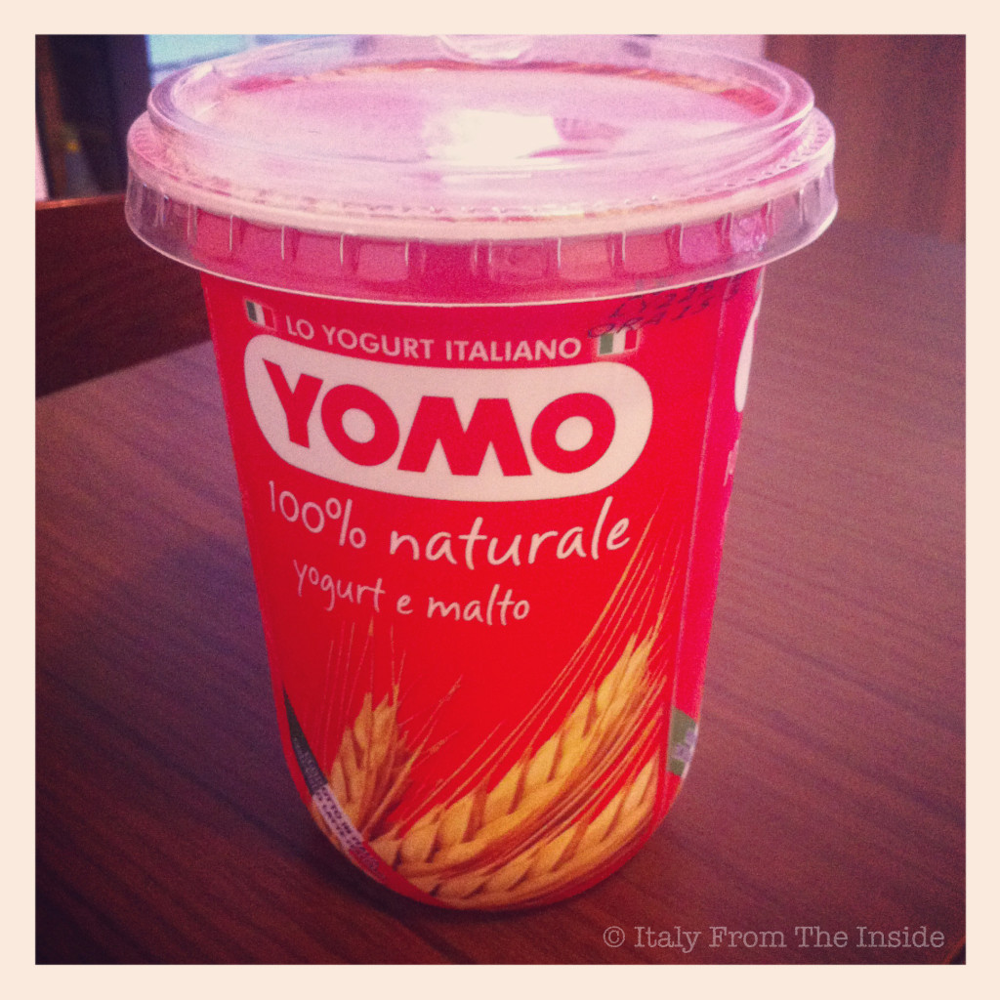

Tomorrow is the day: the kids and I will be leaving for Italy to spend 5 weeks with family and friends in Trieste. The day after tomorrow is the other day: I will be eating the best yogurt on planet earth, the Yomo al malto. Barley yogurt? Yes, and it is delicious. Arrivo!